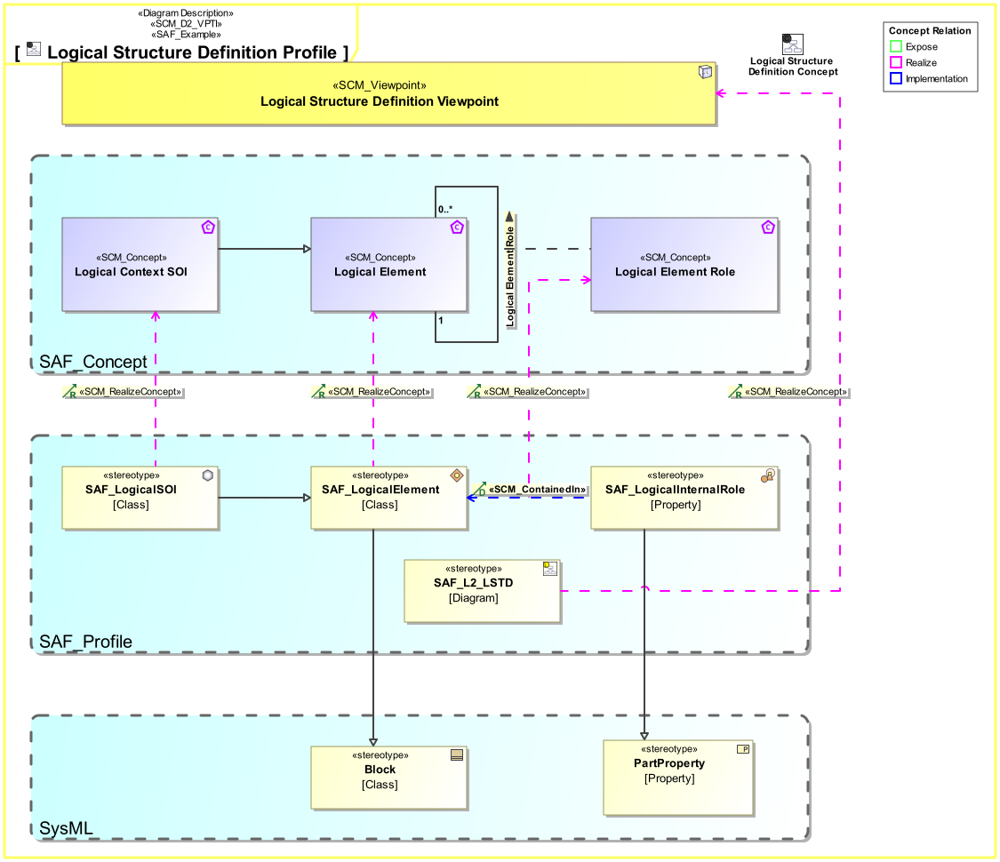

D2_VPTI Framework Viewpoint Implementation Viewpoint
| Domain | Aspect | Maturity |
|---|---|---|
| SAF Development | Taxonomy & Structure |

The Framework Viewpoint Implementation Viewpoint defines the implementation of SE concepts exposed by SAF Viewpoints. It serves as the basis for profile implementations of SAF. It shall specify
The viewpoint is intended to be used for development or extension of the SAF.
The Viewpoint supports the “Specification of an architecture description framework” as defined in ISO42010:2022
A Profile Diagram featuring SCM_Concept elements for the exposed concepts of a viewpoint, stereotypes from the SAF Profile implementing the concepts, and SCM_RealizeConcept relationships tracing the implementation to the implemented concept. If concepts are implemented directly by UML Metaclasses or by SysML profile elements, they shall be shown on the diagram and related to the concepts. There are additional relationships SCM_Attribute, SCM_TypedBy and SCM_ContainedIn, that can be used to specify details of the implementation, e.g. if a concept is to be implemented by the fact that one element is part of an other element. Please see the SAF Development Guide how to do this.
The following Stereotypes / Model Elements are used in the Viewpoint:
The Diagram shows the concepts exposed by the viewpoint, and related concepts if necessary.
| Concept | Documentation |
|---|---|
| PIimplementsSEC | specifies that a stereotype from the SAF profile implements a concept |
| SAF Stereotype | A stereotype of the SAF Profile Model |
| SE Concept | specifies a SE concept to be supported by SAF |
| SSTimplementsVP | specifies, that one ore more SAF Stereotypes implement a viewpoint. Note: Multiple Stereotypes are used if there are alternate presentations. |
| SysML Stereotype | A stereotype from sysml |
| UML Metaclass | A metaclass from UML |
| Viewpoint | A architecture viewpoint defines set of conventions for the creation, interpretation and use of an architecture view to frame one or more concerns |
The Diagram shows the implementation of exposed concepts.
| Concept | Realization |
|---|---|
| PIimplementsSEC | SCM_RealizeConcept |
| SAF Stereotype | |
| SE Concept | SCM_Concept |
| SSTimplementsVP | SCM_RealizeConcept |
| SysML Stereotype | |
| UML Metaclass | |
| Viewpoint | SAF_Viewpoint |